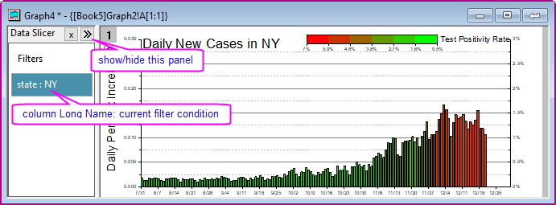
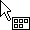
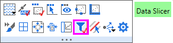
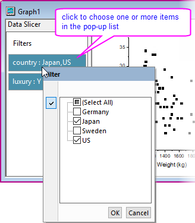
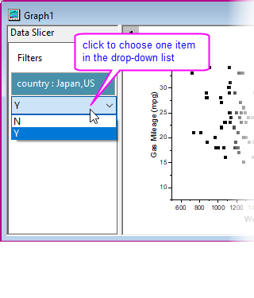
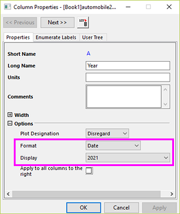
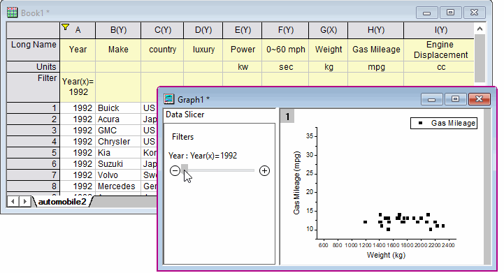

Diagramm mit Datenschnitten
Graph-Data-Slicer
Wenn das Quellarbeitsblatt einer Zeichnung einen oder mehrere Filter hat, wird unabhängig von der Aktivierung/Deaktivierung der Filterbedingung ein Datenschnitt eingeschaltet. Die Datenschnitte sind ein Bedienfeld, das sich links vom Diagrammfenster befindet. Es listet alle vorhandenen Filter auf, so dass Sie die Filterbedingungen anzeigen, einrichten und ändern sowie einen Filter deaktivieren und aktivieren können. Das Diagramm wird entsprechend aktualisiert.

- Bewegen Sie den Cursor in den leeren Bereich in der Ecke der Diagrammseite, wo er sich in  verwandelt. Mit einem Klick wird die Minisymbolleiste auf Seitenebene angezeigt.
- Klicken Sie auf die Schaltfläche ‘’’Datenschnitte’’’, um das Bedienfeld der Datenschnitte einzuschalten.
- 
Bedienelemente der Datenschnitte
Kontextmenü
-
- Filter verbergen: Wenn Sie einen Filter verbergen möchten, können Sie mit der rechten Maustaste auf den leeren Bereich klicken, um ‘’Alle Filter zu zeigen’’’.
- Filter deaktivieren/aktivieren
Das Kontextmenü bietet verschiedene Elemente für unterschiedliche Datentypen.
Text & Kategorial
- Auswahltypen: 'Mehrfachauswahl, Einzelauswahl und Auto. Für Auto ist Mehrfachauswahl Standard. Es folgt dem zuletzt ausgewähltem Typ.
| Mehrfachauswahl |
Einzelauswahl |
|  |
 |
Numerisch
Ein Klick auf einen Filter ruft einen einfachen Dialog auf, in dem Sie die Filterbedingung ändern können.
Datum & Zeit
Ein Klick auf einen Filter ruft einen einfachen Dialog auf, in dem Sie die Filterbedingung ändern können.
 |
Wenn Sie eine Spalte Jahr haben, deren Typ auf Datum > Jahresformat gesetzt ist,
- 
und Sie die Datenzeichnung pro Jahr filtern möchten:
- Fügen Sie einen Filter zu dieser Spalte hinzu. Klicken Sie auf den Filter und wählen Sie ‘’’Benutzerdefinierter Filter’’’ aus.
- Setzen Sie die Formel folgendermaßen:
-
Year(x) = ‘’1992’’
Ein Filter mit einem Schieber wird zum Bedienfeld Datenschnitte hinzugefügt.
- 
|